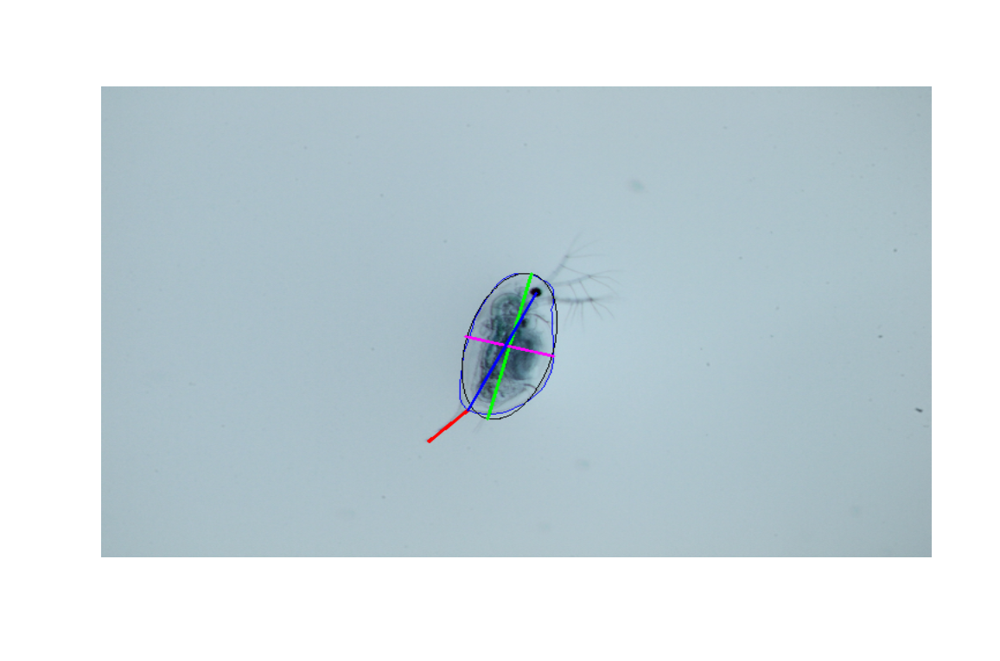

Automatically collect morphometric traits of Daphnia and other zooplankton species by leveraging python. Simply take images of individual specimen and point the daphniaruler towards a single image or a directory of images.
Installation
You can install the daphnia ruler via github using remotes:
remotes::install_github("nelstevens/daphniaRuler")Usage
For detailed usage see: tbd
Measure single images:
library(daphniaruler)
measure_image("path/to/image")The daphniaruler will output a list with all measured traits and plot measurements over the image. 